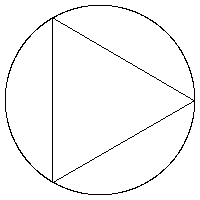
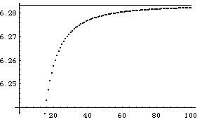

| We know how to measure the length of a straight line. |
| For a reasonably
smooth curve we can try to measure the length of the curve by approximating
it with straight line segments. |
| Using segments of length d, suppose
N such segments are needed to approximate the curve. |
| Then the length
of the curve, measured at scale d, is |
| L(d) = N⋅d |
| For example, let us approximate a circle of radius 1 by straight line segments. |
|  |
| Click the picture to repeat. |
|
| Here is a graph of the lengths of the polygons approximating the circle, for
20 through 100 sides. |
|  |
| The circumference of a circle of radius 1 is 2π ≈ 6.2832, represented by
the horizontal line in the graph. |
| It certainly appears that the polygonal approximation
will work for computing the length of the circle, though many steps are needed to get a
good approximation. |